How CARS24 tested a new look and feel on real screens, picked its first components from teams' roadmaps, and got 44 composable parts adopted in three countries.
44
components in six families
26
on the first, roadmap-led list
3
countries' apps rebuilt on it
3
build batches, in roadmap order
Role
Design Systems Lead, CARS24
Markets
India, UAE, Australia
Platforms
Android, iOS, mobile web
Timeline
2025
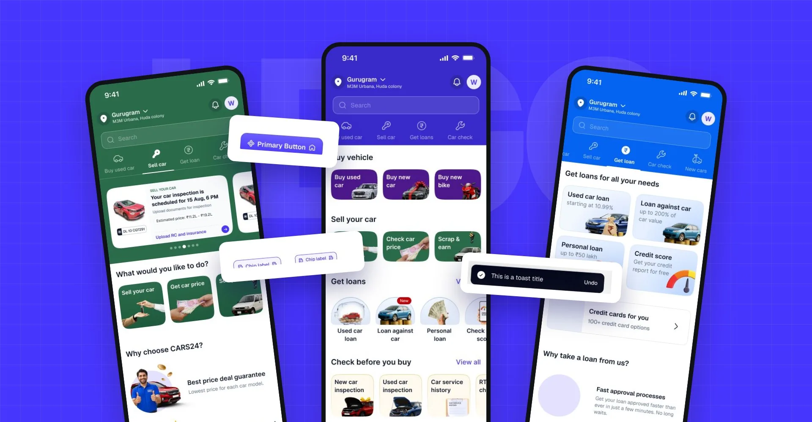
01 the starting point:
New colours. Same old parts.
The 2024 rebrand changed how CARS24 looked. The components underneath it hadn't changed at all.
Audit of the live app and mobile web in early 2025: campaign art in the header, one-off title styles, three badge styles, and two different homepages.
The rebrand moved the palette to OKLCH and carried a new blue through a four-layer token system. That is its own case study. But tokens only recolour what's already there. The buttons, chips, cards and headers were the same old components in new colours, and the app and mobile web still had two different homepages.
So the rebrand became the chance to rebuild the interface too. The team called the new system LEGO: small, solid parts that any team can put together.
Aniket led it as Design Systems Lead at CARS24, with a small group of system designers and product designers from each country.
India, the UAE and Australia each had their own business, product and design teams, and their own plans.
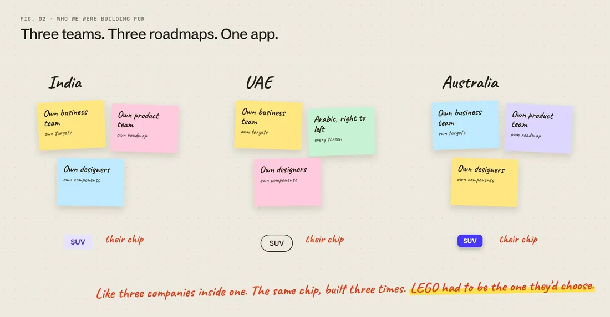
Each country ran almost as its own company. Left alone, each would keep building its own version of the same component.
That was the hardest part of the job. A system made for one team would be ignored by the other two. The UAE also needed every screen in Arabic, reading right to left. And redesigns of the homepage, listing and product pages were already planned, so LEGO had to be ready before those teams started, or they would build their own again.
How might we give three teams with three roadmaps one set of components they'd actually choose?
03 look and feel, first:
Tested on real pages before drawing a component
Shadows, strokes, fills, radius, icons and contrast, each tried on real pages and reviewed with designers from every country.
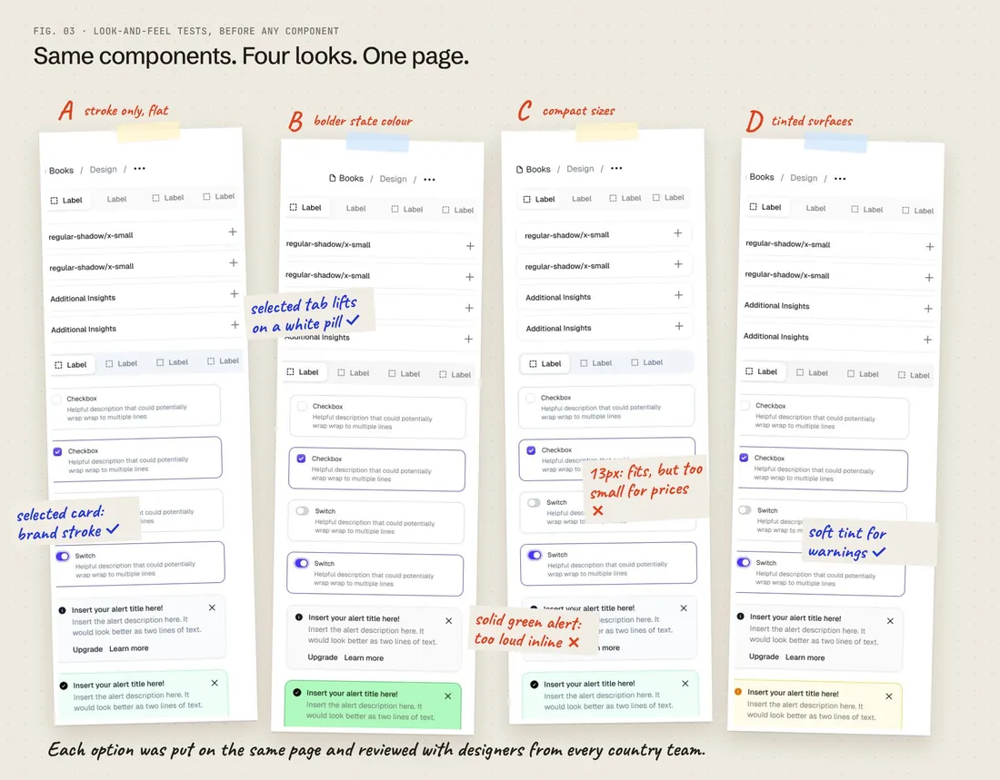
The same components in four looks, side by side on one page. The notes are what the review decided.
Before building anything, the team decided how LEGO should look and feel for the next few years. Nothing was too small to test: should shadows pop or barely show, what colour should they be, how dark can a border get before everything looks like a form, which corner radii are allowed.
Every option went onto real pages, not empty artboards: busy listing pages, light marketing pages, banners and forms. Designers from the country teams reviewed them side by side, so the decisions belonged to them too.
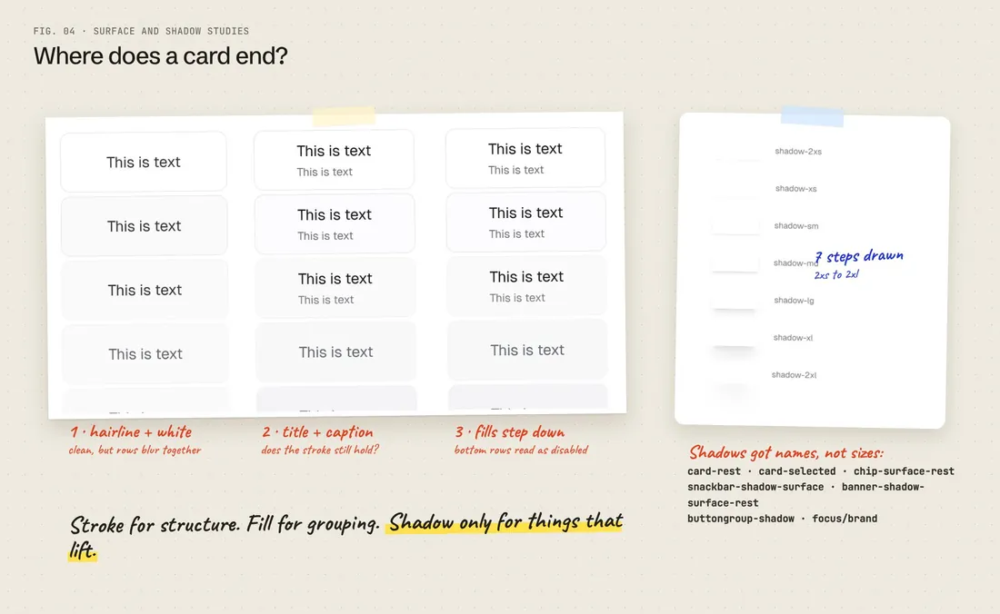
Surface studies: hairline strokes against fills, and a shadow scale whose shadows were named after the components that use them.
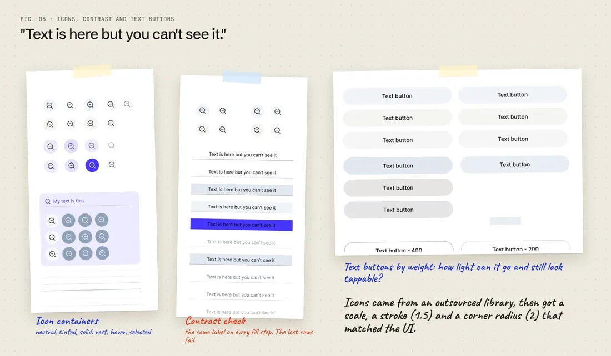
Icon containers, a contrast check on every fill step, and text buttons tested by weight.
04 typography:
A type scale named by its numbers
Fonts were tested on the busiest pages first: listings and product pages full of prices, EMIs, kilometres and badges.
$lego-font-size-17017px · 130% · semibold
Hyundai Creta SX, 2021
$lego-font-size-15015px · 150% · regular
32,410 km · Petrol · 1st owner
$lego-font-size-13013px · 140% · regular
Inspected at 140+ points · 7-day return
How a token reads
$lego-font-size-150
The number is the size: 150 means 15px. Every size carries its own line height. Small text gets more space between lines, big text gets less.
India₹9.85 lakhEMI ₹15,640/mo
UAE٥٤٬٩٠٠ درهمقسط ١٬١٢٠ درهم شهرياً
Australia$24,990drive away
Shown at twice the size. Prices are illustrative: every market's longest price had to fit the same slot, and Arabic needed the taller line height.
Candidate fonts were set into real pages from the apps: listings and product pages first, then light landing pages and marketing banners. The team checked how each font handled numbers and prices, how it sat next to Arabic, and how many lines a listing card took at each size.
The scale that came out of it is short, and every token says what it is. Designers and engineers read the same name and know the size without opening a spec.
05 on real screens:
Same page. New parts.
Every decision was checked against the live homepage, so we could see what users would actually get. Drag to compare.
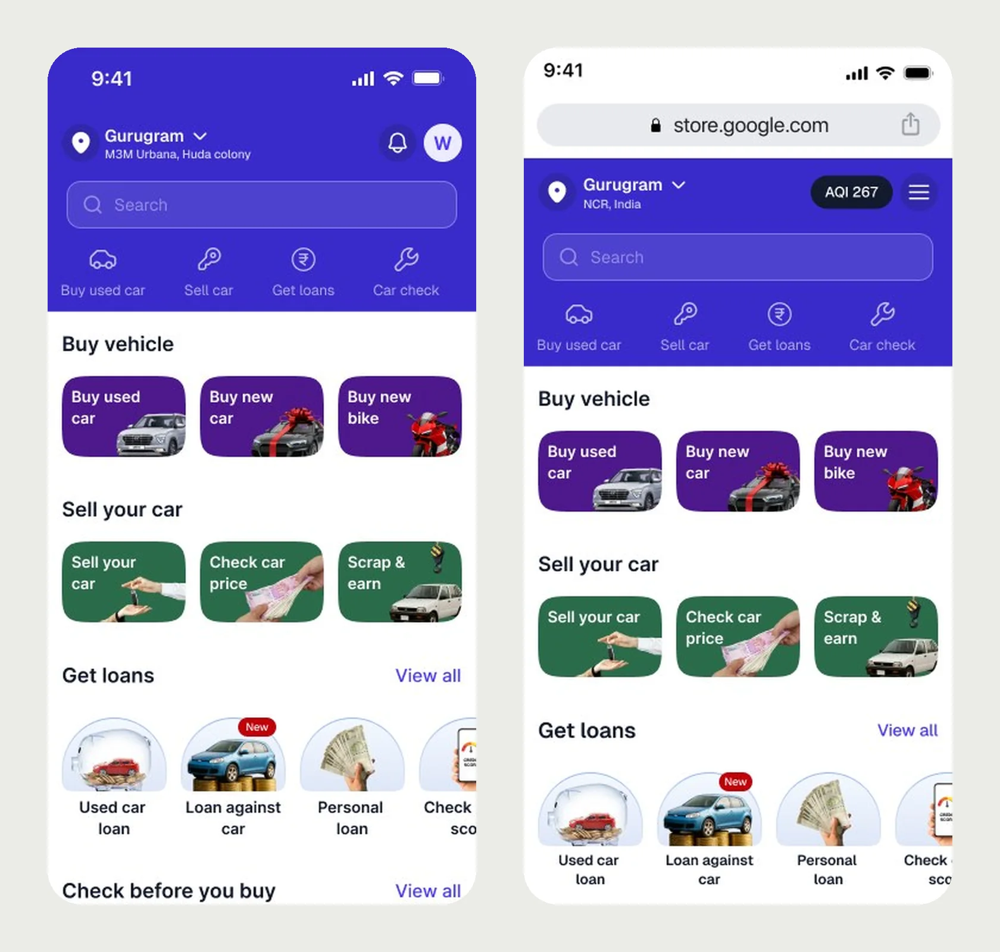
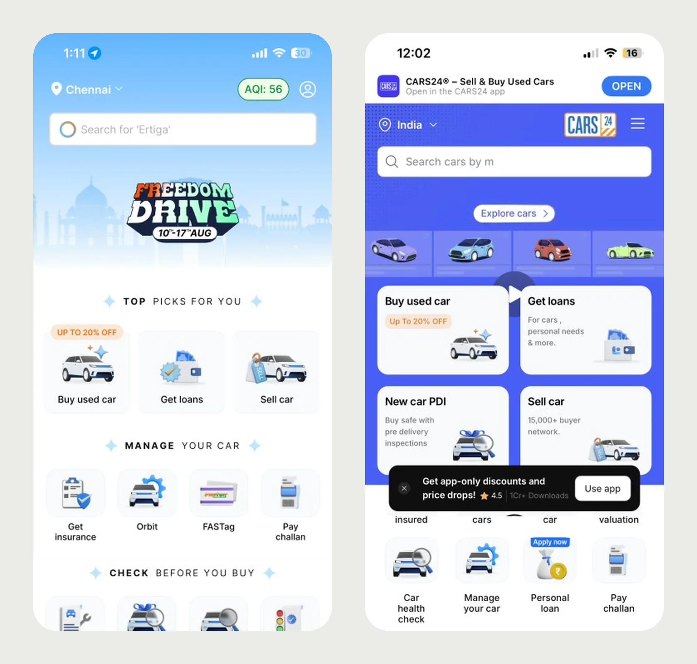
BeforeWith LEGO
App on the left, mobile web on the right.
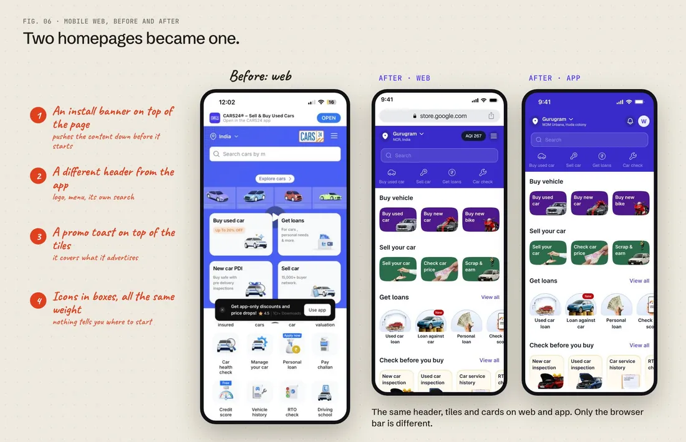
The old mobile web homepage and what was wrong with it, next to web and app rebuilt on LEGO.
06 what to build first:
Not the button
Three teams, redesigns already planned, and a small system team. What we built first would decide whether anyone used LEGO.
The challenge
The obvious first step is the button, then type, colour and the other basics. But no product team needs another team to give them a button, and every team already had one. A system that starts there spends months on parts nobody is waiting for, while the teams redesign their pages with their own components.
The approach
We treated LEGO like a product with customers. Instead of asking what a complete design system should contain, we asked who we could help next, and with what. The product teams were in it from the start: their roadmaps set the order, their screens showed us the components, and their best versions became our starting point.
01
Collect roadmaps
What each country planned to ship next quarter
02
Walk through products
Product and design leads showed us their screens and drafts
03
Inventory
Every component we saw, by team: 26 on the first list
04
Pick the hard, shared ones
Most teams, on the roadmap, hardest to get right
05
Harvest
Start from the best version a team already built
06
Ship with the team
Test it in their screens, then install it together
The planning board, recreated: components spotted in each team's walkthrough, the first list of 26, and the first batch of 12.
Component
Who needed it next
Why it went in batch 1
Choice chips and filters
Listing, search and filters, in all three countries
Used on almost every page; four versions already existed to merge
Input field
Sell car, loans, login
Every form on the roadmap was blocked on it, and it's the hardest to get right
Alert
Loans, car check
New verticals needed clear states for errors, warnings and success
Tabs and segment control
Homepage, explore, listing
The homepage redesign was built around them
Badge
Every listing card
Three badge styles on one screen were the loudest problem in the audit
Button
Everywhere
In batch 1 because every form needs one, but never the starting point: every team already had their own
Reasons summarised from the walkthroughs and the audit.
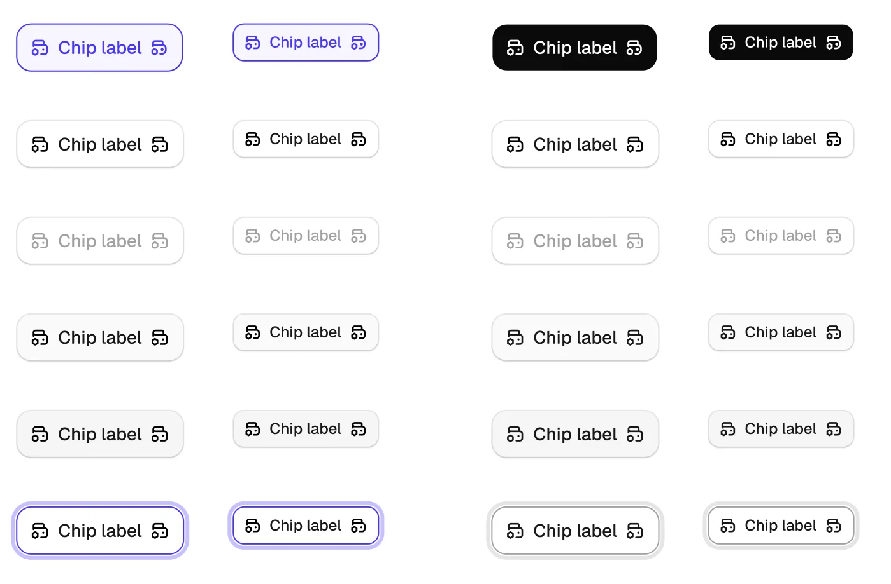
Batch 1 · 12
What every roadmap was blocked on
The parts of every form and listing the country teams were about to redesign.
Checkbox
Radio
Toggle
Input field
Accordion
Breadcrumb
Segment
Badge
Tab
Chip
Button
Alert
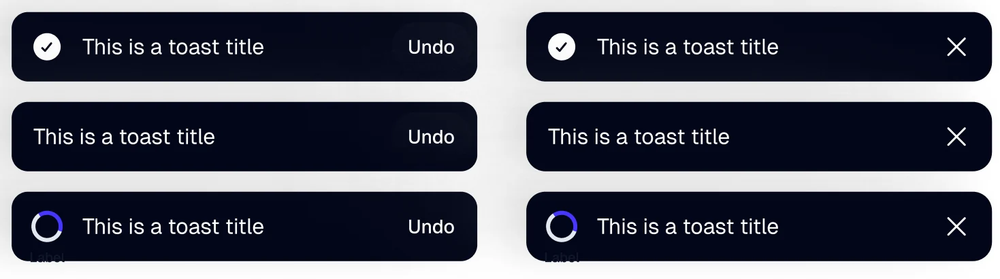
Batch 2
Feedback and inputs, three owners
Split across three system designers, each owning a set from skeleton to QA.
Snackbar
Info strip
Divider
File upload
Header
Loader
OTP input
Page control
Progress
Rating
Slider
Tooltip
Tab bar
Search
Tags
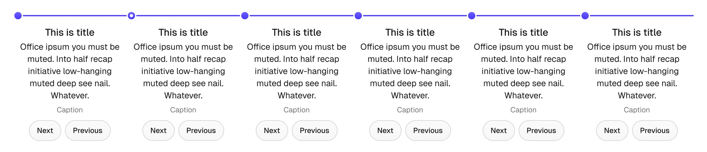
Batch 3
The rest, and what teams asked for
Navigation and overlays, plus components teams requested during the first two batches.
App bar
Bottom sheet
Steppers
Avatar
Phone input
Car registration input
Stack button
07 built to be composed:
One component with slots, not a variant for every case
Every team needs its own version of an input. Drawing each one as a variant doesn't scale. Slots do.
One variant for every case448
2 labels × 2 info icons × 2 leading icons × 2 trailing icons × 2 buttons × 2 helper texts × 7 states. Every one drawn, named and kept in sync, and still missing the case a team needs next.
LEGO: one component with slots1
One text input. Designers switch slots on and off and pick a state. Nothing gets detached, so a fix to the input reaches every screen.
labeloptionalinfoleading icontrailing iconattached buttonhelper text
Five private atoms sit inside the input. Designers never place them directly; they switch the slots.
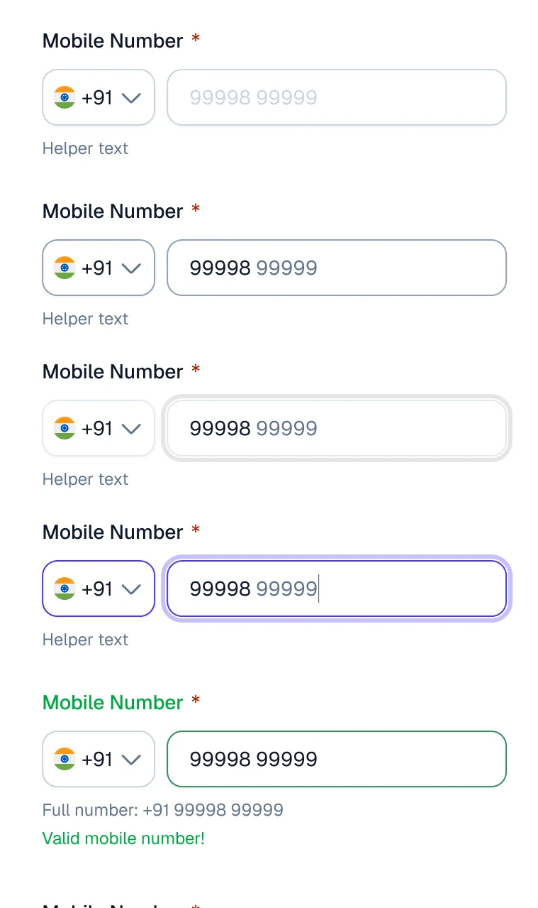
Phone input
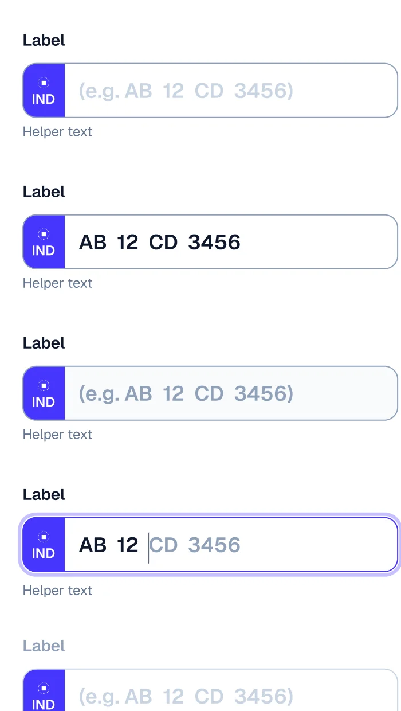
Car registration input
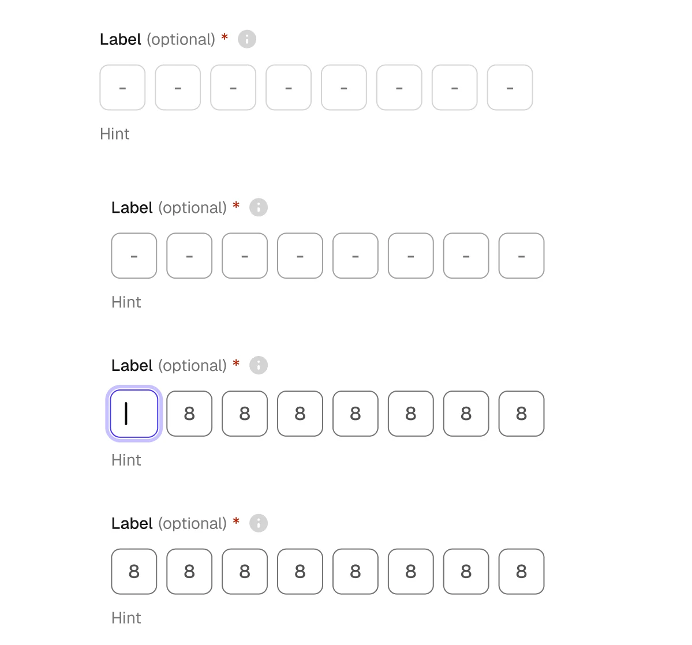
Verification code
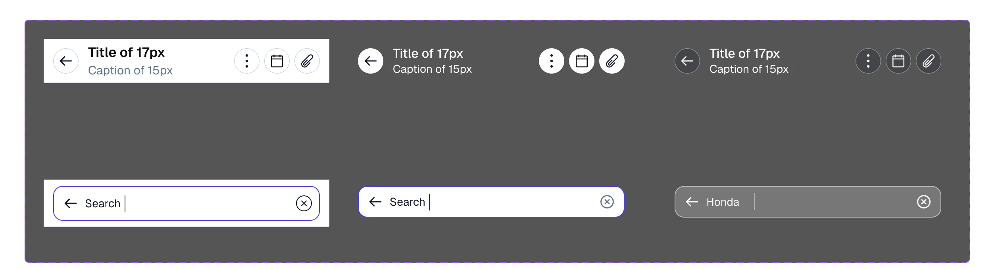
Search, in the app header
Search: before and after
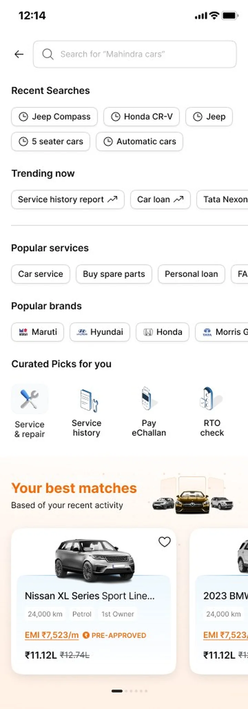
Before · search on the old parts
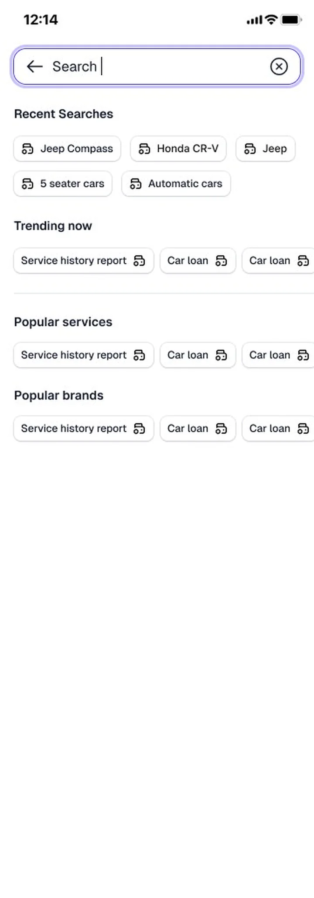
With LEGO · the same search, composed
The new search is made of LEGO parts: the header, the text input, choice chips for recent and trending searches, icon buttons and cards. Compositions like this became the pattern library.
08 the library:
44 components in six families
Every sheet carries its states, sizes, usage notes and the date it last changed.
Every state is its own property, named the same in Figma and in code, and every component was QA'd before release.
rest
filled
read-only
focus
disabled
error
error + filled
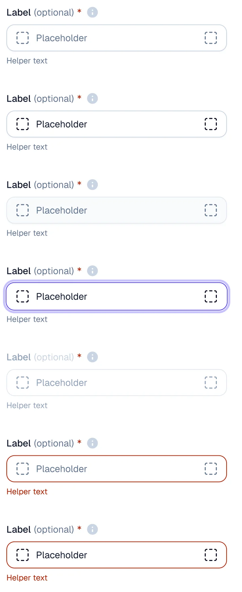
From the state modelling guideline state = "hoverErrorDisabled" interaction rest | hover | active | focus disabled true | false readonly true | false validation none | error | success Same names in Figma and in code.
Find the skeleton in the live product
Define the properties
Define the variants
Write the basic docs
Run the QA checklist
Record the result, file the bugs
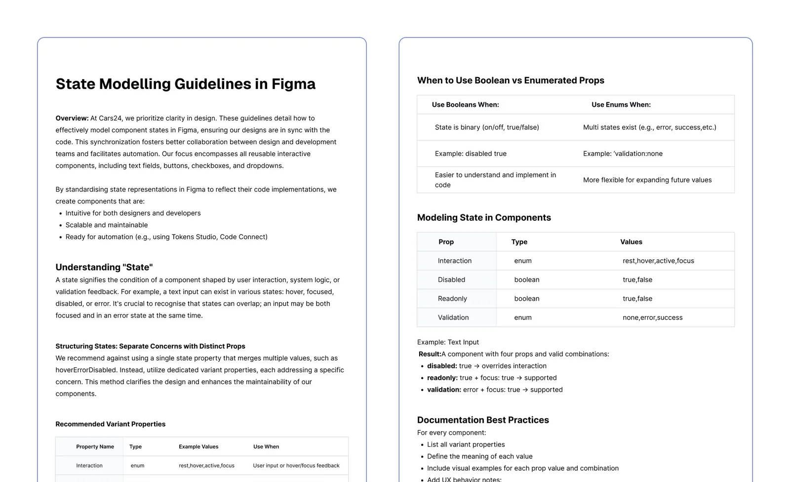
The guideline set one rule: never merge states into one property like hoverErrorDisabled. Interaction, disabled, read-only and validation are separate props. That keeps the number of variants small, makes impossible combinations impossible, and gives engineers the same API they see in Figma.
Every component then went through the same six steps, and nothing shipped until its QA result was written down.
10 adoption:
Run like a launch, team by team
A library nobody uses is a museum. Getting LEGO into three products took as much work as building it.
Designers had to change habits, not just files. LEGO's props worked differently from the old kit: states became separate properties, and variations came from slots instead of detaching a component and drawing over it. If teams didn't understand that, they would detach LEGO too, and we'd be back where we started.
So the rollout was planned as carefully as the components. Each batch shipped with a session that showed what was new. Office hours ran every week. And the system team sat with each country team while they rebuilt their first screens, fixing what broke straight away.
Look and feel
Type, surfaces, shadows, radius and icons tested on real pages, with designers from all three countries reviewing.
Research
Batch 1 ships
The 12 components every roadmap was blocked on, each shown to the teams in a walkthrough.
12 components
Batches 2 and 3, with QA
Split across three system designers; each component QA'd and the result recorded before release.
44 components
Workshops
How the new props work, how slots compose, and how to make your own version without detaching.
All three teams
Office hours
Bring a screen, leave with an answer. Questions that kept coming up became usage notes on the sheets.
Ongoing
Into the products
The homepages in India, the UAE and Australia, then buy, sell, listing and product pages.
Shipped
Workshops
Composability, hands on
Designers rebuilt one of their own screens from LEGO slots and atoms, in the session.
Office hours
Weekly, open to everyone
The fastest way to find the gaps. Each repeated question became a note on the component's sheet.
Arabic
A loop with the UAE team
Right-to-left checks on every component, and help adapting their screens to the new system.
11 shipped:
Every business, its own homepage, the same parts
Sell, car check, loans and explore each got their own homepage. Header, search, tabs, cards and list rows are all LEGO.
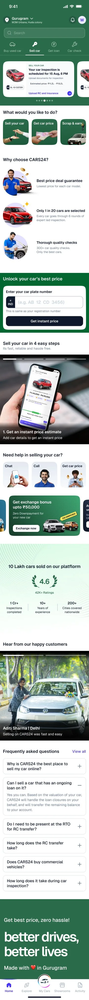
Sell
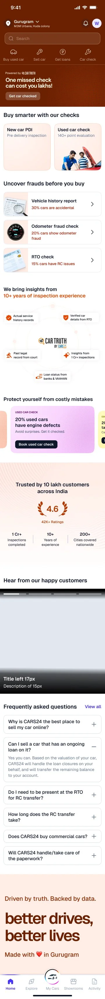
Car check
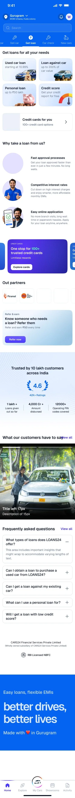
Loans
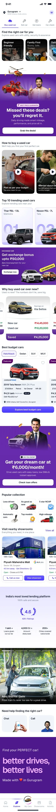
Explore
Pages rebuilt on LEGO, top to bottom
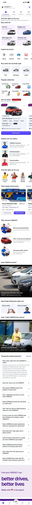
Buy
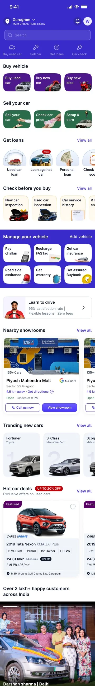
Home
Sell
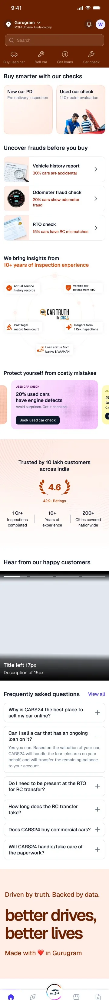
Car check
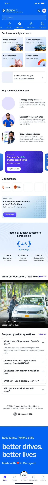
Loans
Each phone scrolls through the full page. Select one to see it whole.
12 what changed:
From an old kit to one system in three countries
Reach
3 countries
The homepages for India, the UAE and Australia moved to LEGO.
Pages
Core flows
Buy, sell, listing cards and product pages, redesigned on the new system.
Library
44 components
Built from five shared atoms, with slots instead of endless variants.
Teams
Adopted, not imposed
Built in the order the teams' own roadmaps needed it.
01
Don't start with the button. Start with the component the next roadmap is blocked on.
02
Test the look and feel on real pages before drawing a single component.
03
Composable slots beat a variant for every case, and let teams make their own versions.
13 for your team:
The same playbook, as a studio engagement
Each step of this case study maps to how we work with clients now.
Aniket Pandey led this as Design Systems Lead at CARS24 (2025), with the CARS24 system designers and the product design teams in India, the UAE and Australia. This is employee work, not Layer One client work. Screens and component sheets belong to CARS24 and are shown for portfolio purposes. The sketch boards are annotated for this page; the planning board is a recreation and its tallies are illustrative.